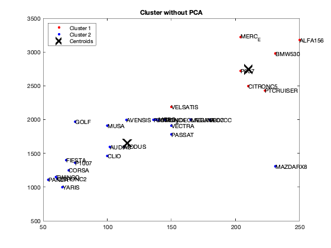
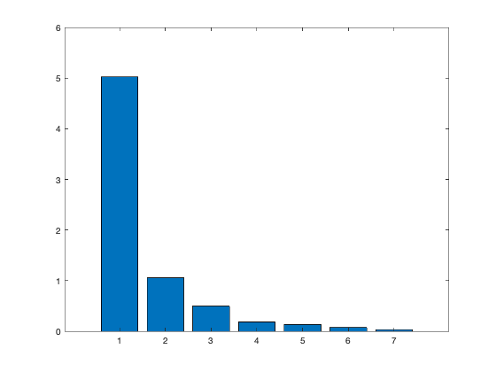
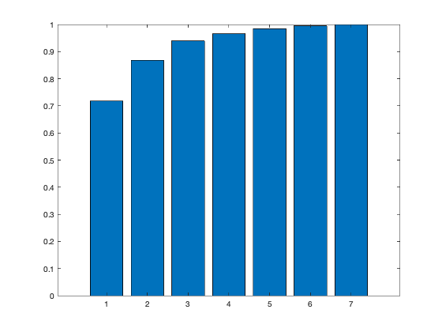
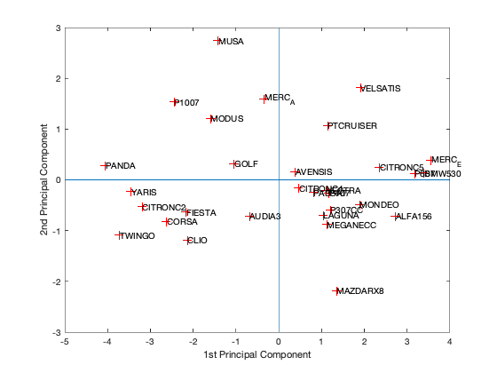
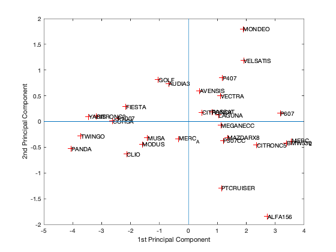
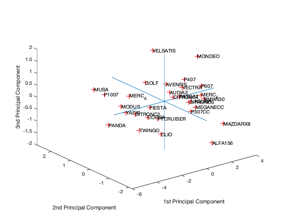
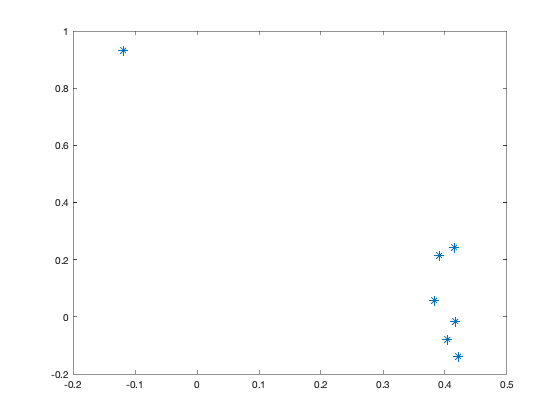
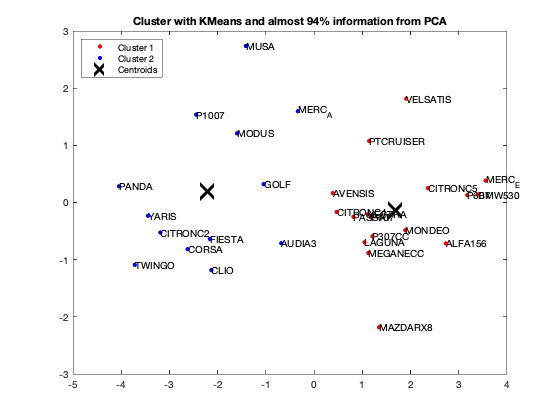

Contents
close all %Lamrous PCA program on notes [dataNum, datatext, alldata] = xlsread('voiture.xls','voiture2'); Data=dataNum(:,1:7); Variables = datatext(1,2:8) Individuals = datatext(2:31,1) %This allows you to generate a PCA %Attention, in the latest versions of Matlab, the "princomp" function is %called otherwise,try "pca"
Variables =
1×7 cell array
Columns 1 through 4
{'puissance'} {'cylindree'} {'vitesse'} {'longueur'}
Columns 5 through 7
{'largeur'} {'hauteur'} {'poids'}
Individuals =
30×1 cell array
{'PANDA' }
{'TWINGO' }
{'YARIS' }
{'CITRONC2' }
{'CORSA' }
{'FIESTA' }
{'CLIO' }
{'P1007' }
{'MODUS' }
{'MUSA' }
{'GOLF' }
{'MERC_A' }
{'AUDIA3' }
{'CITRONC4' }
{'AVENSIS' }
{'VECTRA' }
{'PASSAT' }
{'LAGUNA' }
{'MEGANECC' }
{'P407' }
{'P307CC' }
{'PTCRUISER'}
{'MONDEO' }
{'MAZDARX8' }
{'VELSATIS' }
{'CITRONC5' }
{'P607' }
{'MERC_E' }
{'ALFA156' }
{'BMW530' }
question 5
5) Unroll the Clustering Kmeans algorithm on the global matrix with the following parameters: - Initialization: uniform - Number of groups: 2 - Number of replications: 1
[idx,centres]=kmeans(Data,2,'Replicates',1,'Start','uniform');
question 5
Is your algorithm stable from one execution to another? If "no" in what condition would it be? Our algorithm is unstable because at each iteration the center is chosen randomly. the code suggested below manually sets the center for clustering
[dataNum, datatext, alldata] = xlsread('voiture.xls','voiture2'); DataKmeans=dataNum(:,1:7); %for i=1:10 %fixedCenter = randi([1 5],2,7) fixedCenter = rand(2,7) [idx,centres]=kmeans(DataKmeans,2,'Replicates',1,'Start',fixedCenter); figure; plot(DataKmeans(idx==1,1),DataKmeans(idx==1,2),'r.','MarkerSize',12) hold on plot(DataKmeans(idx==2,1),DataKmeans(idx==2,2),'b.','MarkerSize',12) plot(centres(:,1),centres(:,2),'kx',... 'MarkerSize',15,'LineWidth',3) legend('Cluster 1','Cluster 2','Centroids',... 'Location','NW') title 'Cluster without PCA' text(DataKmeans(:,1),DataKmeans(:,2),Individuals); hold off % end
fixedCenter =
0.5942 0.2084 0.5252 0.3057 0.9568 0.6515 0.6377
0.0031 0.4844 0.2100 0.5018 0.6035 0.3047 0.8723
 question 6
What is the best grouping? answer: 2 see how does it work here: https://fr.mathworks.com/help/stats/evalclusters.html
eva = evalclusters(Data,'kmeans','CalinskiHarabasz','KList',[1:2]..."maximum clustering can be 30, but we should work with two" )
eva =
CalinskiHarabaszEvaluation with properties:
NumObservations: 30
InspectedK: [1 2]
CriterionValues: [NaN 42.2606]
OptimalK: 2
[coeff,scores,eigen_values] = pca(zscore(Data)); coeff % coordinates of variables in the projection space scores % coordinates of individuals in the projection space eigen_values % Eigenvalues %The following command is used to create the graph of the eigenvalues. figure('Name','Eigenvalue spectrum','NumberTitle','off'); bar(eigen_values); % And this gives us the cumulative inertias of the eigenvalues. Information_Percentage = cumsum(eigen_values)./sum(eigen_values) figure('Name','% of cumulative inertia','NumberTitle','off'); bar(Information_Percentage); % This command is used to produce the factorial map of individuals on % the two main axes figure('Name','individus','NumberTitle','off'); plot(scores(:,1),scores(:,2),'r+'); text(scores(:,1),scores(:,2),Individuals); a = axis; xl = a(1);xu = a(2);yl = a(3);yu = a(4); xlabel('1st Principal Component') ylabel('2nd Principal Component') hold on line([xl xu],[0 0]) line([0 0],[yl yu]) %axis 1 axis 3 figure('Name','individuals 1/3','NumberTitle','off'); plot(scores(:,1),scores(:,3),'r+'); text(scores(:,1),scores(:,3),Individuals); a = axis; xl = a(1);xu = a(2);yl = a(3);yu = a(4); xlabel('1st Principal Component') ylabel('2nd Principal Component') hold on line([xl xu],[0 0]) line([0 0],[yl yu]) %axis 2 axis 3 figure('Name','individuals 2/3','NumberTitle','off'); plot(scores(:,1),scores(:,3),'r+'); text(scores(:,1),scores(:,3),Individuals); a = axis; xl = a(1);xu = a(2);yl = a(3);yu = a(4); xlabel('1st Principal Component') ylabel('2nd Principal Component') hold on line([xl xu],[0 0]) line([0 0],[yl yu]) % In 3D figure('Name','individuals 1 2 3','NumberTitle','off'); plot3(scores(:,1),scores(:,2),scores(:,3),'r+'); text(scores(:,1),scores(:,2),scores(:,3),Individuals); a = axis; xl = a(1);xu = a(2);yl = a(3);yu = a(4);z1=a(5);zu=a(6); xlabel('1st Principal Component') ylabel('2nd Principal Component') zlabel('3nd Principal Component') hold on line([xl xu],[0, 0],[0, 0]) line([0 0],[yl yu],[0,0]) line([0 0],[0,0],[z1 zu]) % This command is used to create the circle of variable correlations % on the two main axes. figure('Name','Variables','NumberTitle','off'); plot(coeff(:,1),coeff(:,2),'*');
coeff =
0.4044 -0.0790 -0.5043 -0.4002 0.0680 -0.1920 0.6118
0.3917 0.2147 -0.3307 0.8220 0.1197 -0.0303 0.0112
0.4213 -0.1404 -0.2517 -0.2918 0.3433 0.4170 -0.6022
0.4167 -0.0158 0.3717 0.0392 -0.4468 0.6291 0.3017
0.3823 0.0587 0.6535 -0.0298 0.5698 -0.2889 0.1199
-0.1179 0.9301 -0.0571 -0.2221 0.1345 0.2164 0.0587
0.4146 0.2432 0.0676 -0.1649 -0.5664 -0.5121 -0.3926
scores =
-4.0472 0.2824 -0.5296 0.0481 -0.1216 0.3029 0.1078
-3.7200 -1.0909 -0.2811 0.3755 0.1383 -0.2749 0.0884
-3.4453 -0.2319 0.0988 -0.1354 0.2159 0.0647 0.2326
-3.1877 -0.5250 0.1005 0.0959 0.0690 -0.0397 0.0504
-2.6235 -0.8177 0.0059 0.1814 -0.3447 -0.0025 -0.0766
-2.1625 -0.6374 0.2909 0.3407 -0.4203 -0.2245 -0.1353
-2.1306 -1.1847 -0.6300 0.1808 -0.0105 0.2220 -0.1137
-2.4464 1.5375 0.0590 -0.3301 0.0567 -0.1076 -0.1199
-1.5978 1.2096 -0.4389 -0.4081 0.4058 0.0795 -0.1168
-1.4170 2.7378 -0.3200 -0.1589 0.1118 0.3307 -0.0248
-1.0473 0.3197 0.8125 0.8790 -0.1021 -0.1917 0.2012
-0.3368 1.5964 -0.3389 -0.3367 0.7666 -0.3685 -0.2073
-0.6814 -0.7129 0.7360 0.1595 0.0895 -0.1510 0.0283
0.4648 -0.1627 0.1755 0.0566 0.1404 -0.2251 -0.2237
0.3866 0.1650 0.5991 0.2901 -0.5390 0.2982 -0.0223
1.1160 -0.2073 0.4998 -0.2477 -0.0494 0.1825 -0.1116
0.8168 -0.2523 0.1871 -0.4205 -0.3323 0.7483 -0.0814
1.0447 -0.6974 0.1265 -0.0705 0.0584 0.3193 0.1251
1.1246 -0.8829 -0.0716 -0.1577 0.1056 -0.1447 -0.3229
1.1753 -0.2613 0.8485 0.0521 -0.0272 0.1909 -0.0602
1.2105 -0.5931 -0.3689 -0.3629 -0.1441 -0.2267 -0.3059
1.1419 1.0743 -1.2928 -0.2078 -0.6249 -0.5160 0.4434
1.8907 -0.4868 1.8009 0.0097 0.8752 -0.1395 0.2392
1.3463 -2.1830 -0.3105 -1.4109 -0.0593 -0.2084 0.1643
1.9100 1.8172 1.1883 -0.2660 -0.4744 -0.1885 0.1114
2.3613 0.2514 -0.4568 -0.1139 -0.3363 0.1506 0.1002
3.1763 0.1294 0.1606 0.2307 -0.3763 -0.1982 0.0095
3.5546 0.3838 -0.3855 0.7553 -0.1227 -0.1314 -0.3219
2.7322 -0.7153 -1.8469 0.6783 0.4428 0.0772 0.0960
3.3909 0.1379 -0.4185 0.2934 0.6091 0.3722 0.2466
eigen_values =
5.0224
1.0559
0.4972
0.1842
0.1327
0.0734
0.0341
Information_Percentage =
0.7175
0.8683
0.9394
0.9657
0.9846
0.9951
1.0000
      question 7
Unroll your algorithm on the results of a PCA with at least 94% of information. What is your observation?
We got from Eigenvalue spectrum figure that 70 is a 100% percent its mean that infomation which is more then 94% containts in first 3 splash, thats why we calculate for 65.8 as 94% of the information after PCA we got 0.6905 CriterionValues using SilhouetteEvaluation with kmeans of 2 groups which was 0.6636 with the same without PCA. It's been concluded that after PCA if we apply kmeans then it provides better quality with clustering.
fixedCenter = rand(2,3) % Retain first three principal components selectedThree = scores(:,1:3); [idx,centres]=kmeans(selectedThree,2,'Replicates',1,'Start',fixedCenter); figure; plot(selectedThree(idx==1,1),selectedThree(idx==1,2),'r.','MarkerSize',12) hold on plot(selectedThree(idx==2,1),selectedThree(idx==2,2),'b.','MarkerSize',12) plot(centres(:,1),centres(:,2),'kx',... 'MarkerSize',15,'LineWidth',3) legend('Cluster 1','Cluster 2','Centroids',... 'Location','NW') title 'Cluster with KMeans and almost 94% information from PCA' text(scores(:,1),scores(:,2),Individuals); hold off eva = evalclusters(Data,'kmeans','Silhouette','KList',[1:2]..."maximum clustering can be 30, but we should work with two" ) eva = evalclusters(selectedThree,'kmeans','Silhouette','KList',[1:2]..."maximum clustering can be 30, but we should work with two" )
fixedCenter =
0.8929 0.4086 0.3285
0.4786 0.8509 0.7848
eva =
SilhouetteEvaluation with properties:
NumObservations: 30
InspectedK: [1 2]
CriterionValues: [NaN 0.6636]
OptimalK: 2
eva =
SilhouetteEvaluation with properties:
NumObservations: 30
InspectedK: [1 2]
CriterionValues: [NaN 0.6905]
OptimalK: 2
